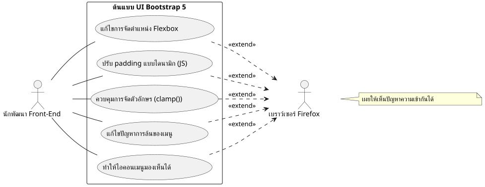
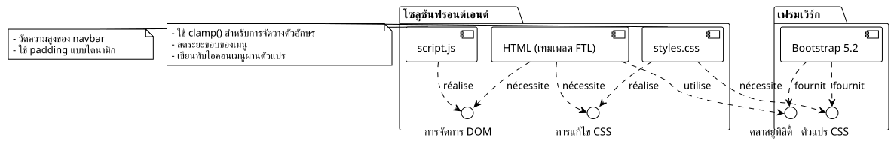
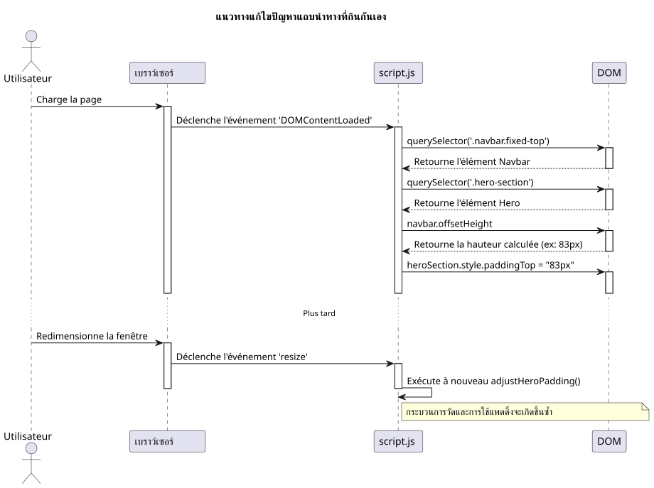

เรื่องเล่าการดีบัก: ปราบความเอาแต่ใจของ Firefox ด้วย Bootstrap 5
เผยแพร่เมื่อ 14 July 2025
|
เวลาอ่าน: ประมาณ 7 นาที ระดับ : ระดับกลาง |
ในกรณีศึกษาละเอียดนี้ เราจะแยกย่อยปัญหาเรื่องความเข้ากันได้กับเบราว์เซอร์ที่พบบ่อยที่สุดและบางครั้งก็น่าหงุดหงิดที่สุดเมื่อสร้างต้นแบบ UI ด้วย Bootstrap 5.2 ตั้งแต่การจัดการ Flexbox ไปจนถึงความละเอียดอ่อนของการเรนเดอร์ฟอนต์ มาดูเส้นทางการดีบักของเราในการเปลี่ยนดีไซน์ที่เบี้ยวใน Firefox ให้เป็นประสบการณ์แบบ pixel-perfect บนทุกเบราว์เซอร์
สมรภูมิ: แม่แบบหนึ่งชิ้น เบราว์เซอร์สามตัว การเรนเดอร์หลายรูปแบบ
นักพัฒนา front-end ทุกคนรู้จักความรู้สึกนี้ดี หลังทำงานมาหลายชั่วโมง ในที่สุดต้นแบบก็สมบูรณ์แบบ การจัดวางเรียบร้อย ตัวอักษรสวยงาม แอนิเมชันลื่นไหล เราถอนหายใจด้วยความพึงพอใจ ชื่นชมผลงานของตนบน Chrome (หรือ Brave หรือ Edge) จากนั้นเพื่อความสบายใจ ก็เปิดโปรเจกต์บน Firefox แล้วหายนะก็เกิดขึ้น องค์ประกอบล้นออกมา การจัดวางพัง ฟอนต์ขนาดกระจัดกระจาย… ความกลมกลืนอันสวยงามก็หายไป
นี่คือสถานการณ์ที่เราเผชิญอย่างแท้จริงในการพัฒนาอินเทอร์เฟซพอร์ตโฟลิโอใหม่ ข้อกำหนดนั้นเรียบง่าย: หน้าแรกที่ทันสมัย รองรับการแสดงผลทุกขนาดหน้าจอ พร้อมตัวเลือกธีม (สว่าง มืด และคอนทราสต์สูง) โดยใช้ vanilla JavaScript และ Bootstrap 5.2 เวอร์ชันล่าสุด
บทความนี้ไม่ใช่รายการทางแก้ปาฏิหาริย์ แต่เป็นบันทึกเหตุการณ์ของเซสชันการดีบักของเรา การเจาะลึกว่า “ทำไม” จึงเกิดความแตกต่างในการเรนเดอร์ระหว่างเอนจิน Blink (Chromium, Brave) และ Gecko (Firefox) และเป็นการแสดงให้เห็นว่าโซลูชันที่แข็งแกร่งและทันสมัยย่อมดีกว่าการอุดชั่วคราวแบบเร่งรีบเสมอ


ปัญหา 1 : การ์ดลอยของส่วน "Hero
บั๊กแรกก็เป็นบั๊กที่มองเห็นได้ชัดเจนที่สุดเช่นกัน ส่วนต้อนรับ ("hero") ประกอบด้วยสองคอลัมน์: ด้านซ้ายคือชื่อเรื่องหลัก; ด้านขวาคือการ์ดแนะนำตัว
-
อาการ :บน Chrome และ Brave ทั้งสองคอลัมน์อยู่กึ่งกลางแนวตั้งอย่างสมบูรณ์แบบ บน Firefox การ์ดด้านขวากลับตกลงไปอยู่ใต้ข้อความด้านซ้ายอย่างอธิบายไม่ได้
-
การสอบสวน:อย่างไรก็ตาม โค้ด HTML ดูเรียบง่ายและถูกต้อง โดยใช้คลาสมาตรฐานของ Bootstrap
<section id="home" class="hero-section">
<div class="container">
<!-- Cette ligne est la clé du problème -->
<div class="row align-items-center min-vh-100">
<div class="col-lg-6">
<!-- Contenu de gauche -->
</div>
<div class="col-lg-6">
<!-- Carte de droite -->
</div>
</div>
</div>
</section>CSS ที่กำหนดเองของเราสำหรับ`.hero-section`กำหนด`display: flex` et align-items: center, และคลาส`min-vh-100`ให้ความสูงขั้นต่ำแก่บรรทัดจริง ๆ (div.row). แล้วทำไม Firefox จึงไม่ยอมจัดคอลัมน์ให้อยู่กึ่งกลาง?
-
สาเหตุที่แท้จริง:นี่เป็นกรณีตัวอย่างเกี่ยวกับวิธีที่เอนจินเรนเดอร์ตีความความสูงโดยนัย`<section>`มี`min-height`, แต่ไม่มี`height`ชัดเจน. เพื่อนำไปใช้`align-items-center`ภายใน`div.row`เนื่องจาก Firefox จำเป็นต้องทราบความสูงอ้างอิงของคอนเทนเนอร์นี้ เพราะพาเรนต์ของมัน (
div.containeret la `<section>`ตัวมันเอง) ไม่มีความสูงเข้มงวด, Firefox หลงทาง เอนจิน Blink ซึ่งผ่อนปรนกว่า สามารถ "เดา" เจตนาและจัดองค์ประกอบให้อยู่กึ่งกลางได้ ส่วน Gecko ซึ่งตรงตามข้อกำหนดมากกว่าไม่ทำเช่นนั้น -
วิธีแก้ไข:ทำให้ความสูงชัดเจนขึ้น เราได้บังคับให้`.container` et le `.row`เพื่อให้มีความสูง 100% ของพาเรนต์ที่เกี่ยวข้อง โดยใช้คลาสยูทิลิตี้`h-100`ของ Bootstrap.
<section id="home" class="hero-section">
<div class="container h-100">
<div class="row align-items-center min-vh-100 h-100">
<!-- ... -->
</div>
</div>
</section>|
เมื่อมี`align-items`Flexbox ไม่ทำงานตามที่คาดไว้บนแกนแนวตั้ง ตรวจสอบเสมอว่าคอนเทนเนอร์มีความสูง ( |
ปัญหา 2: แถบนำทางแบบกินกันเอง
-
อาการ: Le `padding`เพียงพอบน Chrome แต่ไม่ใช่บน Firefox ซึ่งชื่อเรื่องยังคงถูกบังบางส่วนอยู่
-
สาเหตุที่แท้จริง:การใช้ "จำนวนมหัศจรรย์" (
80px) เป็นแนวปฏิบัติที่แย่มาก ความสูงขององค์ประกอบอย่างแถบนำทางอาจแตกต่างกันเพียงไม่กี่พิกเซลระหว่างเบราว์เซอร์หนึ่งกับอีกเบราว์เซอร์หนึ่ง เนื่องจากความแตกต่างเล็กน้อยในการแสดงผลฟอนต์ การเว้นระยะ หรือแม้แต่การตั้งค่าของผู้ใช้ การพึ่งพาค่าคงที่คือสูตรสำหรับการออกแบบที่เปราะบาง -
ทางแก้ไข:โซลูชันแบบไดนามิกและไร้ข้อผิดพลาดใน JavaScript เราได้เขียนสคริปต์เล็กๆ เพื่อ:
-
วัดความสูงจริงของแถบนำทางหลังจากการเรนเดอร์หน้าเพจ
-
ใช้ความสูงที่วัดได้นี้เป็น`padding-top`ไปยังส่วน "Hero
-
รันฟังก์ชันนี้ซ้ำทุกครั้งที่หน้าต่างถูกปรับขนาด เพื่อปรับให้เข้ากับการเปลี่ยนแปลง (เช่น การเปลี่ยนไปใช้เมนูแฮมเบอร์เกอร์)
document.addEventListener('DOMContentLoaded', function() {
function adjustHeroPadding() {
const navbar = document.querySelector('.navbar.fixed-top');
const heroSection = document.querySelector('.hero-section');
if (navbar && heroSection) {
const navbarHeight = navbar.offsetHeight;
heroSection.style.paddingTop = navbarHeight + 'px';
}
}
// Ajuster au chargement et au redimensionnement
adjustHeroPadding();
window.addEventListener('resize', adjustHeroPadding);
});
ในขณะเดียวกัน แน่นอนว่าเราได้ลบกฎ`padding-top: 80px;`ของไฟล์ของเรา`styles.css`.
ปัญหา 3: การจัดวางตัวอักษรที่ไร้ระเบียบ
ปัญหาถัดไปคือสิ่งที่ทำลายภาพลักษณ์แบรนด์มากที่สุด: ขนาดของชื่อเรื่องหลัก
-
อาการ:บน Firefox ฟอนต์ของชื่อเรื่อง "Développeur Formateur…" ใหญ่มหึมา เกือบจะน่าตกใจ ในขณะที่บนเบราว์เซอร์อื่น ๆ มันกลับดูกลมกลืน
-
สาเหตุที่แท้จริง:ชื่อเรื่องใช้คลาส`display-4`ของ Bootstrap คลาสเหล่านี้ใช้ขนาดฟอนต์ที่ตอบสนอง ซึ่งมักอิงกับหน่วย`rem`และ media queries อีกครั้งหนึ่ง อัลกอริทึมการเรนเดอร์ของ Firefox เมื่อรวมกับฟอนต์ "Inter" ส่งผลให้การคำนวณขนาดมีค่ามากขึ้นอย่างมากบนความละเอียด 1920x1080 ของเรา
-
วิธีแก้ไข:กลับมาควบคุมด้วยฟังก์ชัน CSS`clamp()
. ฟังก์ชันนี้เป็นการปฏิวัติสำหรับการจัดพิมพ์แบบลื่นไหล ช่วยให้กำหนดขนาดตัวอักษรได้ด้วยสามค่า ได้แก่ ขนาดขั้นต่ำ ขนาด "ที่ต้องการ" (ซึ่งปรับตามความกว้างของวิวพอร์ต,`vw), และขนาดสูงสุด
.hero-content h1 {
color: var(--text-primary);
line-height: 1.2;
/*
Min: 2rem
Préférée: s'adapte à la vue
Max: 2.5rem (40px)
*/
font-size: clamp(2rem, 1.2rem + 1.5vw, 2.5rem);
}กับ`clamp(), เราสามารถบอกเบราว์เซอร์ได้ว่า "ขยายฟอนต์ให้โตตามหน้าจอ แต่ต้องไม่เกินไม่เคยขีดจำกัดของ`2.5rem. สิ่งนี้ทำให้การแสดงผลกลมกลืนกันทันทีในทุกเบราว์เซอร์ โดยให้การควบคุมรูปลักษณ์ขั้นสุดท้ายอย่างสมบูรณ์แก่เรา.
ปัญหา 4: แถบนำทางที่ล้นออกมา
นี่คือปัญหาที่ทำให้เราปวดหัวที่สุดและในที่สุดก็เผยให้เห็นธรรมชาติที่ลึกซึ้งของความแตกต่างเล็ก ๆ ในการเรนเดอร์
-
อาการ:บนหน้าจอ 1920x1080 ลิงก์สุดท้ายของเมนู ("Blog", "Contact") ถูกดันออกไปนอกหน้าจอทางด้านขวา แต่เฉพาะบน Firefox
-
สาเหตุที่แท้จริง:หลังจากความพยายามหลายครั้งที่ไม่ประสบความสำเร็จ (การเปลี่ยนเบรกพอยต์ของ Bootstrap จาก`lg` à
xl`แล้ว`xxl), เราเข้าใจแล้ว สาเหตุไม่ใช่ตรรกะของ Bootstrap แต่เป็นการคำนวณความกว้างง่าย ๆ บน Firefox ผลรวมของความกว้างของลิงก์ทั้งหมด รวมถึงของลิงก์เหล่านั้น`padding` et `margin`เมื่อคลาดเคลื่อนไม่เกินหนึ่งซับพิกเซล ค่านั้นมีค่ามากกว่า 1920 พิกเซล*เล็กน้อย* บน Chrome ผลรวมเดียวกันนี้มีค่าน้อยกว่า*เล็กน้อย* เราขาดไปไม่กี่พิกเซล -
วิธีแก้ไข:การลดระยะห่างอย่างแม่นยำราวกับผ่าตัด เนื่องจากไม่ใช่ทางเลือกที่จะเจาะจงเฉพาะ Firefox ด้วย "แฮ็ก" CSS ที่ล้าสมัย วิธีแก้ไขที่สะอาดเพียงอย่างเดียวคือการหาสไตล์ร่วมที่ทำงานได้ทุกที่ เราจึงลดระยะขอบและระยะห่างแนวนอนของลิงก์นำทางแต่ละรายการลงเล็กน้อย
/* La version finale, légèrement plus compacte */
.navbar-nav .nav-link {
font-size: 0.9rem; /* 90% de la taille de base */
color: var(--text-primary) !important;
font-weight: 500;
margin: 0 0.2rem;
padding: 0.5rem 0.5rem !important;
border-radius: 0.375rem;
transition: all 0.3s ease;
}การลดขนาดนี้ ซึ่งแทบมองไม่เห็นด้วยตาเปล่าเมื่อดูที่องค์ประกอบเพียงชิ้นเดียว ช่วยให้เราได้พื้นที่ที่จำเป็นโดยรวม เพื่อให้ลิงก์ทั้งหมดพอดีอยู่ในกรอบบน Firefox ขณะที่ยังคงรูปลักษณ์ที่เกือบเหมือนเดิมบนเบราว์เซอร์อื่น
ปัญหา 5: เมนูแฮมเบอร์เกอร์ที่มองไม่เห็น
-
อาการ :ในโหมด responsive (เมนู "แฮมเบอร์เกอร์") ไอคอนเมนูมองไม่เห็นในธีม "dark" และ "high-contrast
-
สาเหตุที่แท้จริง:ไอคอนเมนูของ Bootstrap 5 คือ`background-image`(SVG ที่เข้ารหัสเป็น URL) โดยค่าเริ่มต้น สีของเส้นจะเป็นสีเข้ม ซึ่งเหมาะสำหรับพื้นหลังสว่าง และจะไม่ปรับตามการเปลี่ยนธีมโดยอัตโนมัติ
-
วิธีแก้ไข:ใช้ตัวแปร CSS ของ Bootstrap เพื่อเขียนทับไอคอน เราได้กำหนดไอคอน SVG ใหม่ แต่ครั้งนี้เป็นเส้นสีขาว (
#ffffff), และเราได้นำไปใช้โดยเฉพาะเมื่อหัวข้อ`dark` ou `high-contrast`เปิดใช้งานอยู่
/* ======================
Fix pour l'icône du menu Burger (Blanc)
====================== */
[data-bs-theme="dark"] .navbar-toggler-icon,
[data-bs-theme="high-contrast"] .navbar-toggler-icon {
--bs-navbar-toggler-icon-bg: url("data:image/svg+xml,%3csvg xmlns='http://www.w3.org/2000/svg' viewBox='0 0 30 30'%3e%3cpath stroke='%23ffffff' stroke-linecap='round' stroke-miterlimit='10' stroke-width='2' d='M4 7h22M4 15h22M4 23h22'/%3e%3c/svg%3e");
}|
การปรับแต่งคอมโพเนนต์ของ Bootstrap แบบนี้ทำกันมากขึ้นเรื่อย ๆ ผ่านการโอเวอร์ไรด์ตัวแปร CSS ( |
บทสรุป: บทเรียนจากการดีบักอย่างมุ่งมั่น
เส้นทางนี้ แม้บางครั้งจะน่าหงุดหงิด แต่ก็เต็มไปด้วยบทเรียน ปัญหาแต่ละข้อที่ได้รับการแก้ไขตอกย้ำความจริงพื้นฐานประการหนึ่งของการพัฒนาเว็บ:ไม่มีสิ่งใดทดแทนการทดสอบหลายเบราว์เซอร์อย่างเข้มงวดได้.

-
Firefox เป็นพันธมิตร:การที่มันยึดตามมาตรฐาน CSS มากขึ้นบังคับให้เราเขียนโค้ดที่แข็งแรงทนทานและคลุมเครือน้อยลง
-
หลีกเลี่ยง "ตัวเลขมหัศจรรย์" :ค่าคงที่ (เช่น`padding-top: 80px`) เป็นระเบิดเวลาที่รอปะทุอยู่เสมอ ควรเลือกใช้โซลูชันแบบไดนามิก (JavaScript) หรือแบบเชิงสัมพัทธ์ (Flexbox, Grid) เสมอ
-
เชี่ยวชาญการจัดวางตัวอักษรของคุณ:ใช้`clamp()`เพื่อการควบคุมขนาดฟอนต์ที่ตอบสนองได้อย่างเต็มที่
-
คิดในแง่ "คอมโพเนนต์" :เพื่อปรับแต่ง Bootstrap ให้กำหนดค่าทับตัวแปร CSS ของ Bootstrap แทนที่จะเพิ่มกฎที่เขียนทับเฟรมเวิร์กให้มากขึ้นเรื่อยๆ
-
อย่ากำหนดเป้าหมายเป็นเบราว์เซอร์:วิธีแก้ปัญหาแทบไม่เคยเป็นการทำ "hack" สำหรับเบราว์เซอร์ใดเบราว์เซอร์หนึ่ง แต่เป็นการหาสไตล์ร่วมที่ใช้งานได้ทุกที่
สุดท้ายแล้ว แบบจำลองตอนนี้มีความมั่นคง คาดการณ์ได้ และพร้อมที่จะถูกนำไปผสานเข้ากับระบบเทมเพลต ทุกบั๊กที่แก้ไขไม่ใช่ความล้มเหลว แต่เป็นก้าวหนึ่งไปสู่โค้ดที่มีคุณภาพดีขึ้น